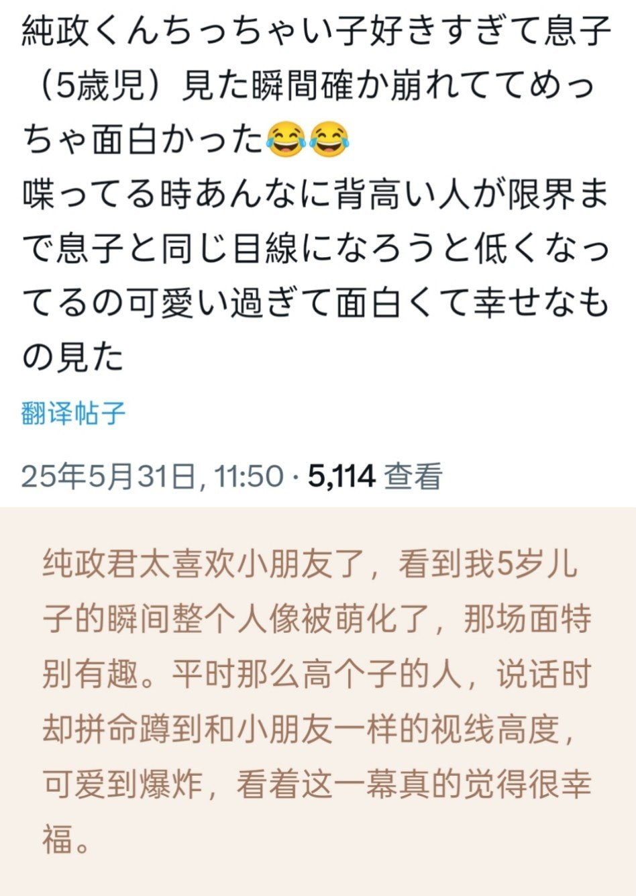

世界上每个存在的诞生都值得感谢，但还是谢谢你的出生，谢谢你努力来到我们的面前~
“本岛纯政”这个名字的由来是，名字中的“纯”代表着“希望这个孩子能够保持本真，纯粹地成长”，而“政”则是取自父亲的名字。包含了“正直地生活下去”的想法。
母亲真的是一个非常温柔的人，总是为我着想。她常常对我说的一句话是：“要对别人心怀感激。”还教导我：“你对别人付出的，一定会从对方那里得到回报。”我就是在这样的教诲下长大的。
猪猪是人类最好的朋友🥺
热血漫猪角已就位！
高中时我是轻音学部的部长。最初部员只有10人左右，这样下去会被废部的状态。乐器和音响设备本身就非常昂贵，光是购买还不够，还需要修理费。总之，部费不足，如果部员不增加，就只能自己掏钱。在这种情况下，我宣布道:"那我就当部长，努力招募新部员!"
首先，我决定邀请更多人来体验入部，我去了高一的楼层，拉着嗓子对大家说:"我们在进行轻音学部的活动，如果有兴趣，欢迎来参加"。现在回想起来，也会觉得"我当时到底在干什么啊!!"因为我想玩轻音玩到毕业，是否会废部也悬而未决。最重要的是，我自己非常希望"与更多人分享带给别人威动的喜悦，只要做了绝对不会后悔!"因此，我充满自信地去勉励大家加入。
就这样，我不断地向那些放学后看起来很闲的孩子和时间充裕的团体打招呼，结果部员增加得太多了!最终部员人数达到了60到70人。虽然三年级的部员极少，基本上全是一年级和二年级的学生，但部费变得非常充裕。我和顾问老师商量后，借了另一个部室，用预算购买了新的吉他替换掉旧的，为部员们创造了一个更容易进行新尝试的环境。
谢谢你总是能够带来力量~
——如果可以选择另一种人生，你会选择什么样的人生？
——因为现在的人生非常幸福，所以好像根本没办法去想象其他的人生。 如果对现在的自己感到后悔，我觉得那会是对一直以来支持我的人的一种失礼。 而且我也认为，正是因为有身边这些人的存在，才成就了现在的我。
现在在我身边的每一个人我都非常珍惜， 所以如果可以的话，我想再一次以本岛纯政的身份， 去遇见同样的这些人。
在这本书里，凝聚了我各种各样的心情与想法。 我非常喜欢和大家聊天、交流的时间。 在大家眼中，我是怎样的呢？ 如果一直给人很有精神、很开朗的印象就好了。
但是当我一个人的时候，其实是那种很容易想很多的类型。 会忍不住去想，一年后的自己会变成什么样， 是不是已经成长为一个合格的大人了之类的， 真的会想很多很多。
一个人偷偷哭的时候也完全不稀奇。 每天都感到非常不安。
不过，一想到有一直支持着我的人， 以及今后还能通过作品去拯救、鼓励某个人， 我就会觉得「好，再努力一下吧」。
怀着想要和大家一起分享各种情感的心情， 创作了这本写真集。 今后也想和大家一起看到各种各样的风景。 我不会落下任何一个人。 让我们一起创造更多快乐的回忆吧。
一直以来，谢谢大家的支持。
本岛纯政
新的一年请幸福降临猪猪手心~猪只需要承担一支冰激淋的重量
——如果现在有500日元，你会怎么花？
——我家里的辣椒粉用完了，所以我打算买点辣椒粉回去。不过我也很喜欢冰激淋，买冰激淋回家也不错。